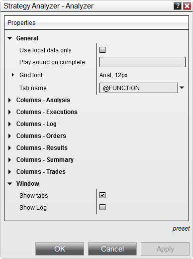

|
<< Click to Display Table of Contents >> Strategy Analyzer Properties |


|
Strategy Analyzer Properties
|
<< Click to Display Table of Contents >> Strategy Analyzer Properties |
|
Many of the Strategy Analyzer visual display settings can be customized using the Strategy Analyzer Properties window.
 How to access the Strategy Analyzer Properties
How to access the Strategy Analyzer Properties
You can access the Strategy Analyzer Properties dialog window by clicking on your right mouse button and selecting the menu Properties. |
 Available properties and definitions
Available properties and definitions
The following properties are available for configuration within the Strategy Analyzer Properties window:

Property Definitions
|
 How to preset property defaults
How to preset property defaults
Once you have your properties set to your preference, you can left mouse click on the "template" text located in the bottom right of the properties dialog. Selecting the option "save" and naming it "Default" will save these settings as the default settings used every time you open a new window/tab. Saving the template with other names will allow you to save additional configuration that you could load.
If you change your settings and later wish to go back to the original settings, you can left mouse click on the "template" text and select the option to "reset" to return to the original settings. |